Renovación actual: ver el escenario tropical antes/después y la interfaz nueva. Esta página conserva las capturas de la revisión anterior del protagonista.
El usuario aprobó el parecido del protagonista presentado: «Me parece correcto todo». Estas capturas muestran las mallas exportadas. La aprobación corresponde a esta versión, registrada en art-review.json; las validaciones técnicas y la publicación pendientes se detallan en el informe.
Jugar la versión Godot · Resultados de verificación
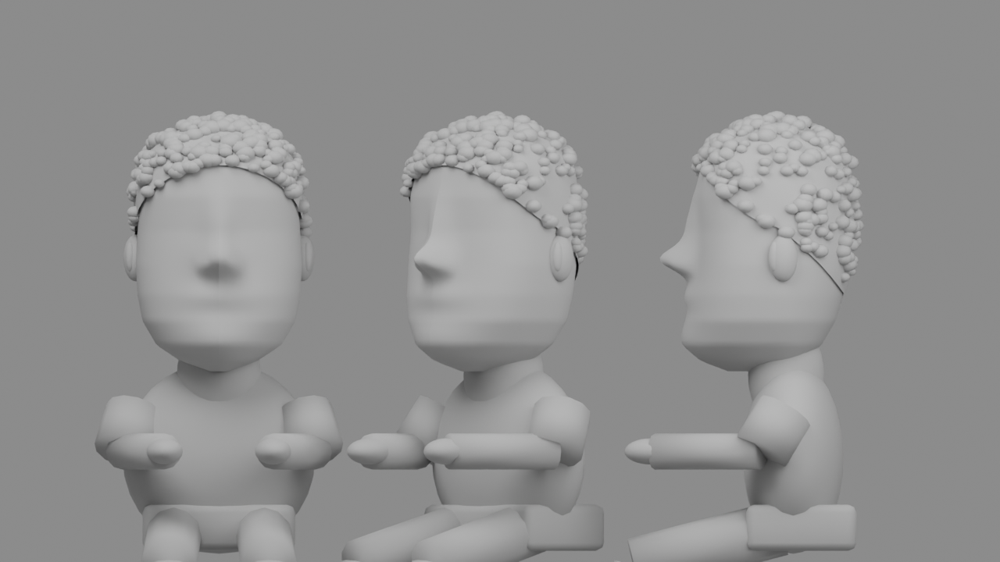
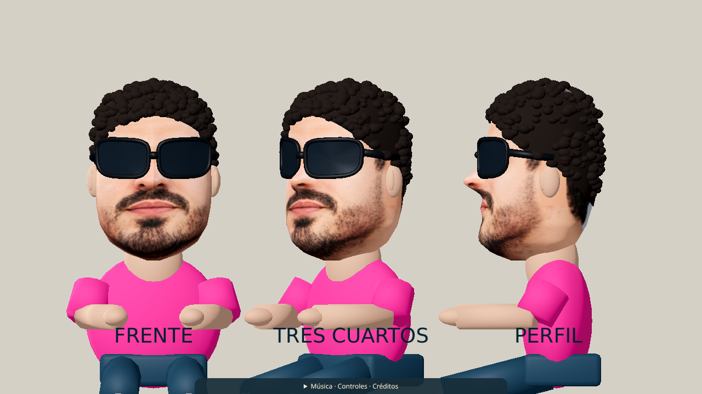
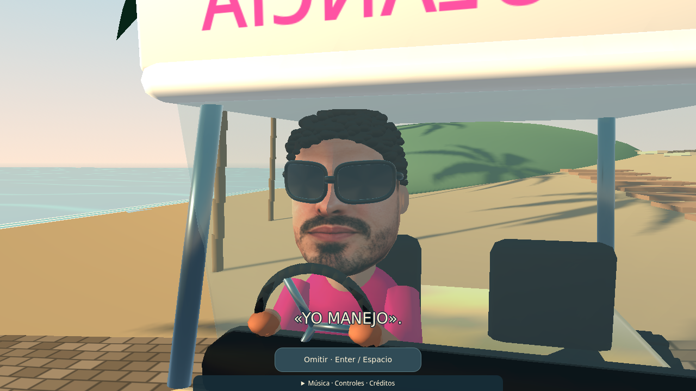
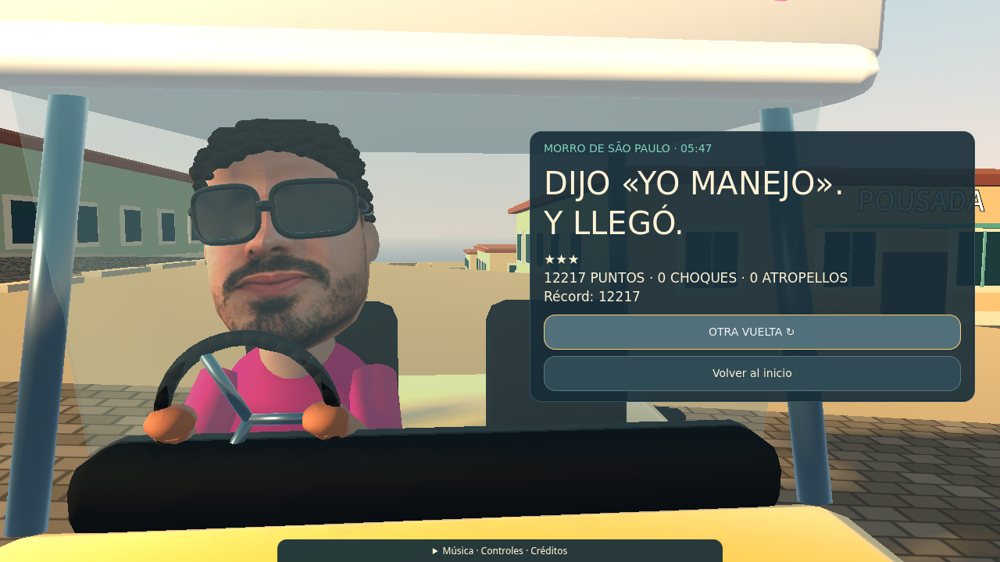
La columna izquierda utiliza las capturas preexistentes del juego Three.js; la derecha, la nueva versión Godot. Son comparaciones del mismo lugar, con encuadres distintos; no constituyen una prueba de equivalencia de píxeles.
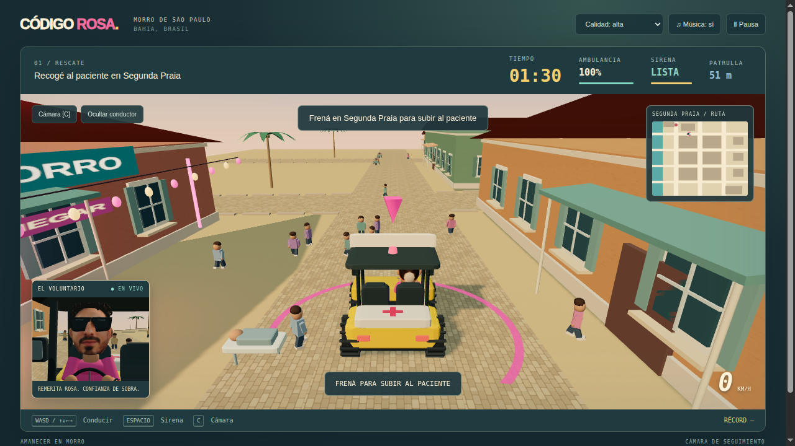
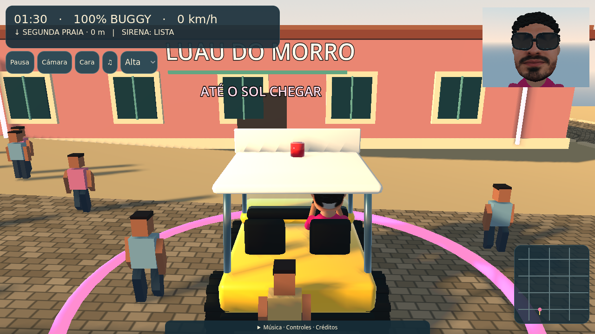
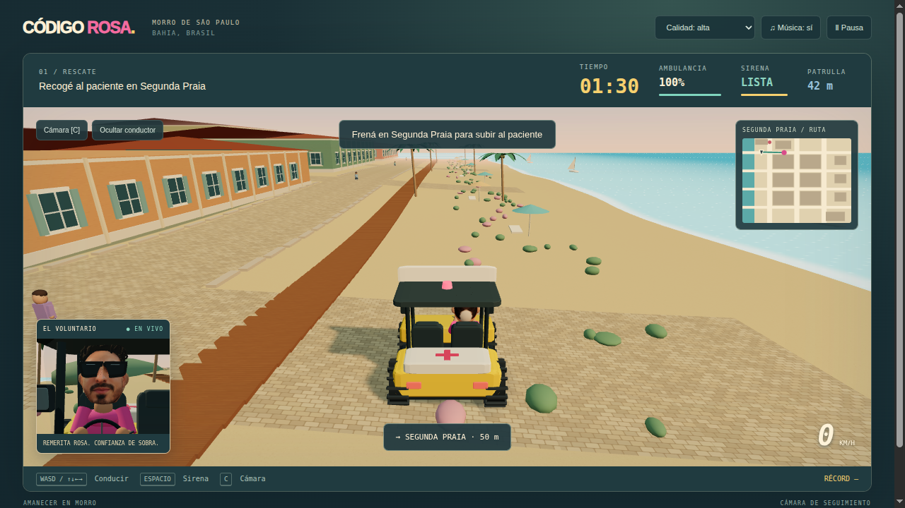
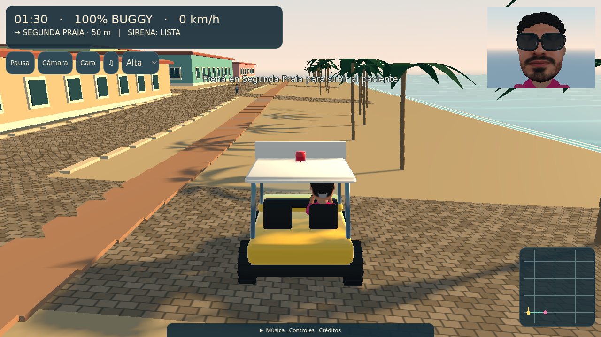
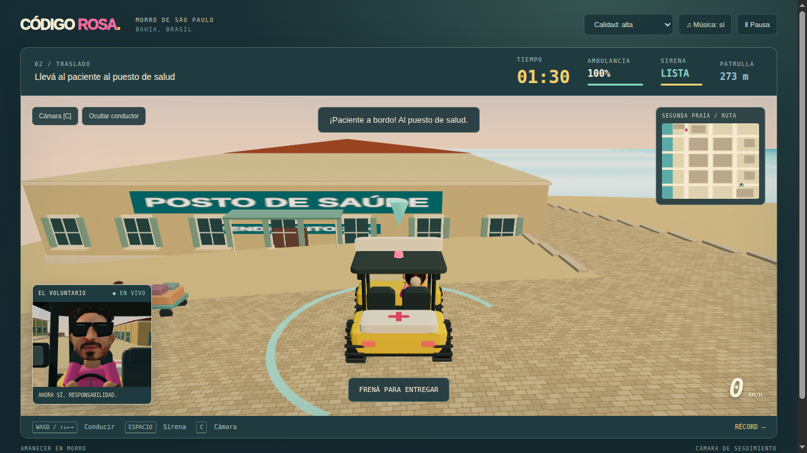
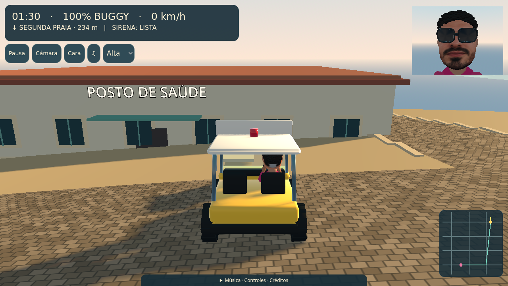
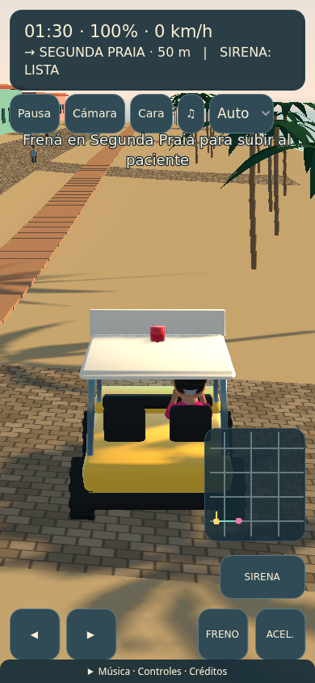
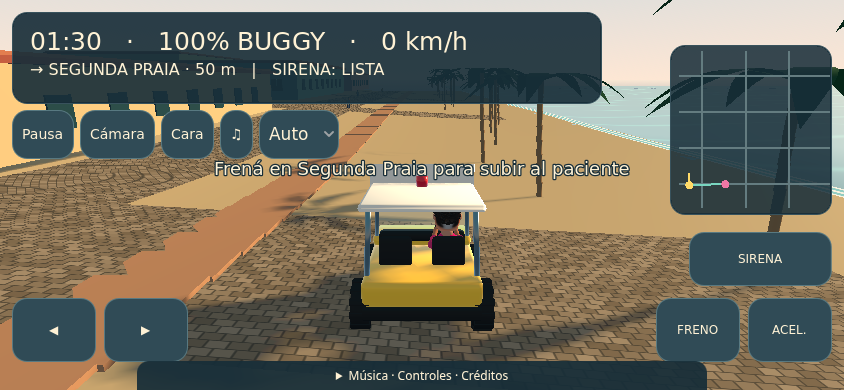